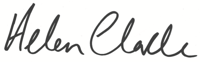

Looking Forward
UNDP commemorates its 50th anniversary this year. When UNDP was founded in 1966, around one in every three people was living in poverty. As UNDP begins its second half-century, the number of people in extreme poverty stands at about one in eight. Today, UNDP continues to work actively with governments and other partners to make that number even lower.
In 2015-2016, the development challenges impacting the world were thrown into stark relief. The Syria crisis entered its sixth year, with more than 250,000 people dead and some 12 million displaced. The devastating earthquake in Nepal last year killed more than 8,000 people and left many homeless. Despite great progress, women were still underrepresented in governments and parliaments and overrepresented in the population of people living in poverty 20 years after the 1995 UN Fourth World Conference on Women.
Yet UNDP remains confident about the prospects for development. 2015 was also a watershed year for all who are concerned about the future of people and our planet, including UNDP and the wider UN system.
In September 2015, world leaders signed an historic agreement to end poverty and protect the planet on which we all depend. For the next 15 years, the Sustainable Development Goals (SDGs) will guide UNDP’s work to support governments to eradicate poverty, reduce inequalities, and achieve sustainable development. UNDP, with its partners within and beyond the UN system, will support countries to achieve the SDGs and fulfil the promise they hold for all people.

Helen Clark
UNDP Administrator